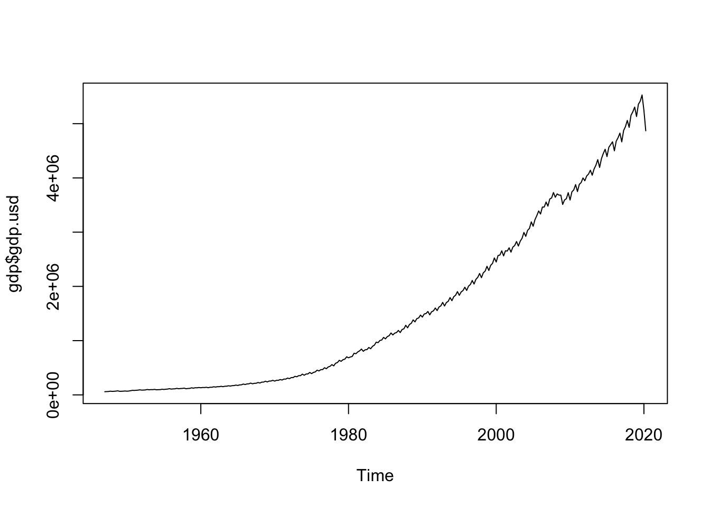
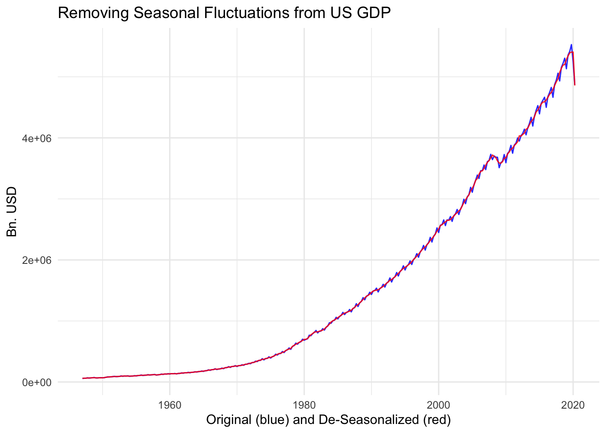
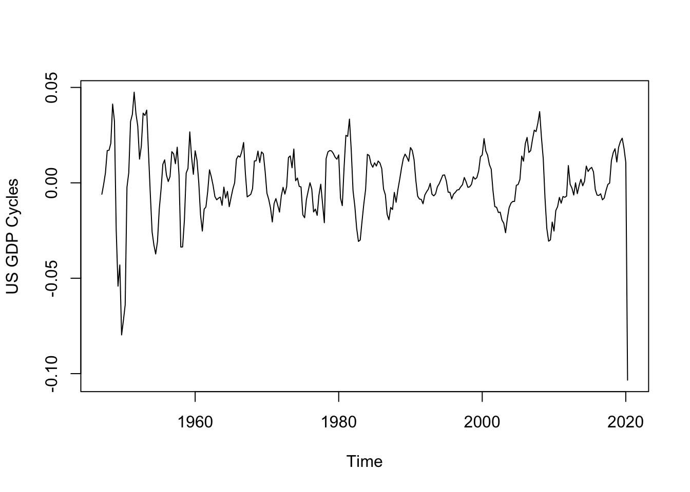
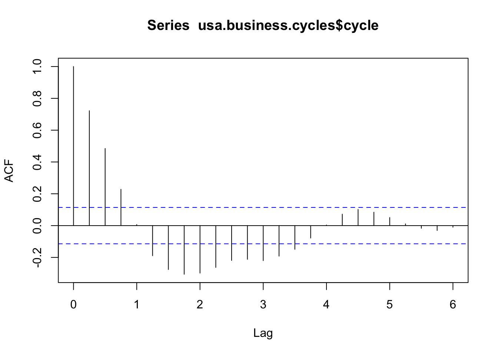

Extracting Business Cycles from Time Series Objects
Getting Started
We start with the basics of R, exploring the memory and clearing out backlog from previous work.
ls() # checking R's memory...
list.files() # checking files in my working directory...
# rm(list = ls()) # clearing all previously stored items...
# import data from your excel sheet
install.packages("readxl") # for importing from excelThen we import the data from an excel sheet.
library(readxl)
gdp <- read_excel("/Users/nikhildamodaran/Dropbox/Teaching/Macroeconomics-II/Fall-2020/Teaching Resources/Exercise 1/GDP FRED USA.xlsx")
# features of the data
class(gdp) ## [1] "tbl_df" "tbl" "data.frame"str(gdp) # structure of the data## tibble [294 × 2] (S3: tbl_df/tbl/data.frame)
## $ time : POSIXct[1:294], format: "1947-01-01" "1947-04-01" ...
## $ gdp.usd: num [1:294] 58497 60672 62196 68250 64258 ...head(gdp) # first 5 rows...## # A tibble: 6 x 2
## time gdp.usd
## <dttm> <dbl>
## 1 1947-01-01 00:00:00 58497
## 2 1947-04-01 00:00:00 60672
## 3 1947-07-01 00:00:00 62196
## 4 1947-10-01 00:00:00 68250
## 5 1948-01-01 00:00:00 64258
## 6 1948-04-01 00:00:00 66539Tell me the features of the variable
sapply(gdp, class)## $time
## [1] "POSIXct" "POSIXt"
##
## $gdp.usd
## [1] "numeric"Note that first variable is POSIXct - a time series object.
ts.plot(gdp$gdp.usd)
Converting Variables into Time Series Objects
Problem: GDP variable is not time series but only a bunch of numbers
# converting the vector into time series with a starting and ending time
gdp$gdp.usd <- ts(data=gdp$gdp.usd, frequency = 4,start=c(1947,1), end=c(2020,2))
# checking the class of variables in data
sapply(gdp, class)## $time
## [1] "POSIXct" "POSIXt"
##
## $gdp.usd
## [1] "ts"class(gdp$gdp.usd)## [1] "ts"Now plotting this in R again:
ts.plot(gdp$gdp.usd)
# tell me the difference between the first and the second plotProblems remain: axis is not marked properly for reading.
Removing Seasonality
We need to undergo seasonal transformation only if the data is not seasonalized. This is not a problem for annual data, but for lower frequencies we need to remove the effects of seasonal fluctuations.
# Lets extract business cycles from US data
# Step 1: Remove seasonal effects:
install.packages("seasonal") # for seasonal Remove seasonal effects such as diwali:
library(seasonal)
deseasonal.gdp <- seas(gdp$gdp.usd)Check what are the results of seasonal adjustment and understand what you have done:
summary(deseasonal.gdp) # you've done a regression##
## Call:
## seas(x = gdp$gdp.usd)
##
## Coefficients:
## Estimate Std. Error z value Pr(>|z|)
## LS1949.1 -0.061962 0.009600 -6.455 1.08e-10 ***
## LS1949.2 -0.033523 0.009394 -3.568 0.000359 ***
## LS1949.4 -0.038255 0.009197 -4.160 3.19e-05 ***
## LS1950.3 0.054944 0.009109 6.032 1.62e-09 ***
## LS1958.1 -0.036860 0.009031 -4.082 4.47e-05 ***
## LS1978.2 0.036852 0.009030 4.081 4.49e-05 ***
## AO2020.2 -0.111059 0.010157 -10.934 < 2e-16 ***
## AR-Nonseasonal-01 0.219161 0.057195 3.832 0.000127 ***
## MA-Seasonal-04 0.656624 0.044446 14.774 < 2e-16 ***
## ---
## Signif. codes: 0 '***' 0.001 '**' 0.01 '*' 0.05 '.' 0.1 ' ' 1
##
## SEATS adj. ARIMA: (1 1 0)(0 1 1) Obs.: 294 Transform: log
## AICc: 6017, BIC: 6053 QS (no seasonality in final):1.215
## Box-Ljung (no autocorr.): 29.24 Shapiro (normality): 0.9708 ***
## Messages generated by X-13:
## Notes:
## - Unable to test AO1949.1 due to regression matrix singularity.
## - Unable to test LS1981.1 due to regression matrix singularity.attributes(deseasonal.gdp) # get the data ## $names
## [1] "call" "list" "series" "data" "err"
## [6] "udg" "est" "model" "fivebestmdl" "x"
## [11] "spc" "wdir"
##
## $class
## [1] "seas"library(ggplot2)
gdp$deseasonal <- deseasonal.gdp$data[,3] # store this data in your dataset
ggplot(gdp, aes (y=gdp$gdp.usd, x = gdp$time)) + geom_line(colour=alpha('blue', 0.85)) + geom_line(aes(y=gdp$deseasonal, x = gdp$time), colour=alpha('red', 0.85) ) + theme_minimal() + xlab("Original (blue) and De-Seasonalized (red)") + ggtitle("Removing Seasonal Fluctuations from US GDP") + ylab("Bn. USD")## Don't know how to automatically pick scale for object of type ts. Defaulting to continuous.## Warning: Use of `gdp$time` is discouraged. Use `time` instead.## Warning: Use of `gdp$gdp.usd` is discouraged. Use `gdp.usd` instead.## Warning: Use of `gdp$time` is discouraged. Use `time` instead.## Warning: Use of `gdp$deseasonal` is discouraged. Use `deseasonal` instead.
Isolating Business Cycles
Installing packages required for filtering
# Step 2: Lets get the business cycles
install.packages("mFilter")Getting the business cycles:
library(mFilter)
usa.business.cycles <- hpfilter(log(gdp$deseasonal), freq = 1600)
attributes(usa.business.cycles)## $names
## [1] "cycle" "trend" "fmatrix" "title" "xname" "call" "type"
## [8] "lambda" "method" "x"
##
## $class
## [1] "mFilter"ts.plot(usa.business.cycles$cycle, gpars = list(ylab ="US GDP Cycles"))
Obtaining the summary statistics for these business cycles
summary(usa.business.cycles$cycle)## Min. 1st Qu. Median Mean 3rd Qu. Max.
## -0.1033967 -0.0083196 -0.0008513 0.0000000 0.0123782 0.0475003sd(usa.business.cycles$cycle) # standard deviation of GDP cycles## [1] 0.01822255acf(usa.business.cycles$cycle) # auto-correlation function
acf(usa.business.cycles$cycle, plot = FALSE)##
## Autocorrelations of series 'usa.business.cycles$cycle', by lag
##
## 0.00 0.25 0.50 0.75 1.00 1.25 1.50 1.75 2.00 2.25 2.50
## 1.000 0.722 0.485 0.228 0.007 -0.189 -0.276 -0.306 -0.298 -0.263 -0.219
## 2.75 3.00 3.25 3.50 3.75 4.00 4.25 4.50 4.75 5.00 5.25
## -0.212 -0.220 -0.192 -0.149 -0.078 0.004 0.072 0.102 0.084 0.051 0.011
## 5.50 5.75 6.00
## -0.017 -0.031 -0.010